Library / Web Motion and Effects
24 keywords in this category, each one tested and explained in plain language.
Pick keywords as you browse, then press Copy for AI and paste into ChatGPT, Claude or any AI. Copy keywords gives a plain list for Midjourney or Seedance.
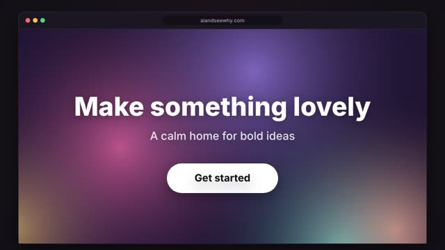
A soft blend of colours slowly drifts and swirls behind a headline, like coloured light moving under frosted glass.
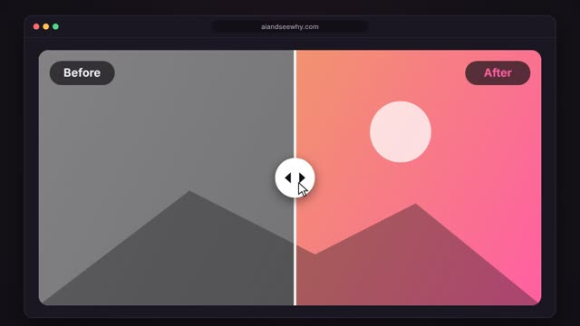
Two versions of the same picture sit on top of each other, with a line and handle you drag sideways to uncover one or the other.
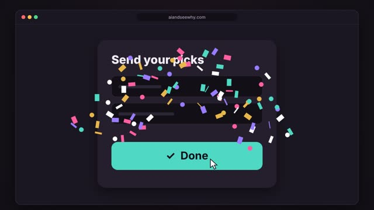
Clicking a button like Submit or Done sends a burst of colourful confetti flying out, spinning, falling and fading away.
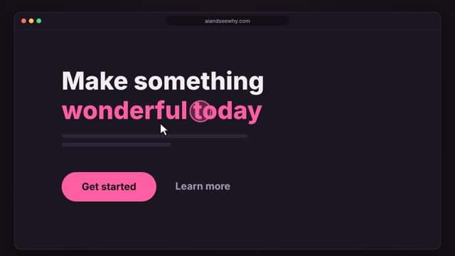
A soft coloured circle trails behind the mouse pointer with a little delay, like it is chasing it.
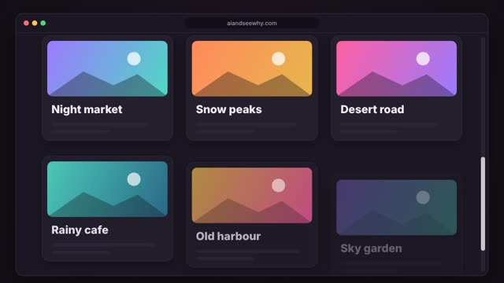
Cards and sections rise a little and fade into view one after another as they enter the screen.
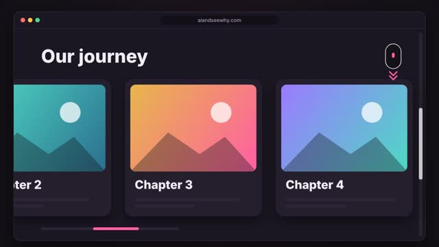
Scrolling down the page moves a row of big cards sideways across the screen instead.
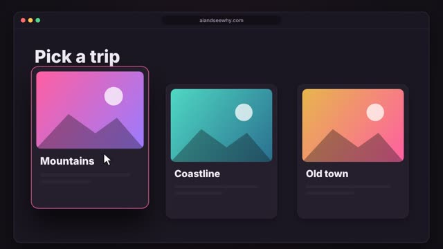
When the mouse passes over a card, it rises a little and casts a deeper shadow, then settles back down when the mouse leaves.
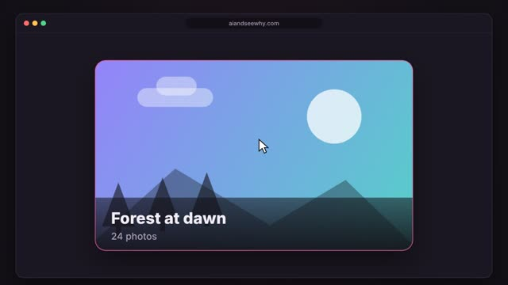
When the mouse rests on a picture, the image slowly zooms in inside its frame while a caption slides up from the bottom.
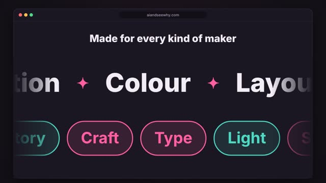
Rows of big words or little labels glide sideways forever in a smooth endless loop, often with rows moving in opposite directions.
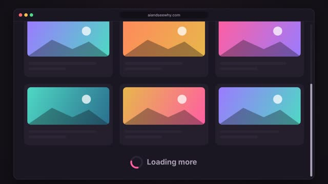
As you scroll to the bottom of a feed, a small loading sign appears and more items arrive below, so the list never seems to end.
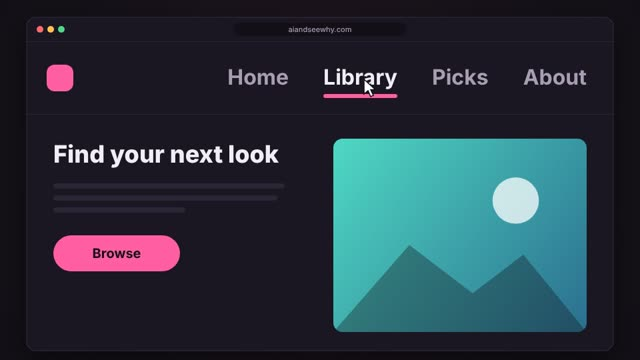
When you point at a link, a line draws itself underneath from left to right, then slides away when you move off.
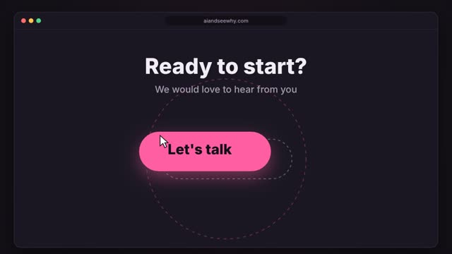
A button that leans toward the mouse as it gets close, as if pulled by a magnet, then springs back when the mouse moves away.
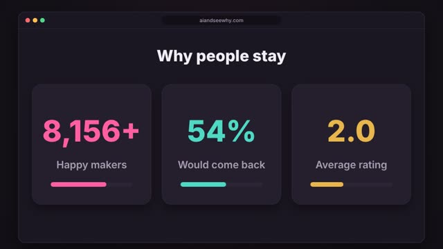
Big numbers on stat cards count up quickly from zero to their real values and slow down as they land.
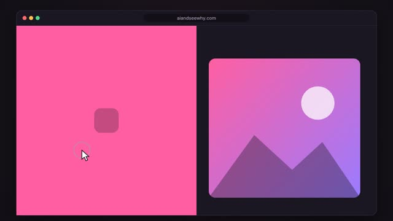
When you click a link, a coloured panel sweeps across the screen and the next page appears behind it, instead of a sudden jump.
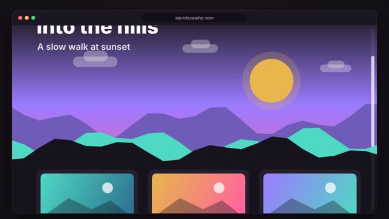
Layers of a page move at different speeds as you scroll, so the background drifts slowly while the front races past.
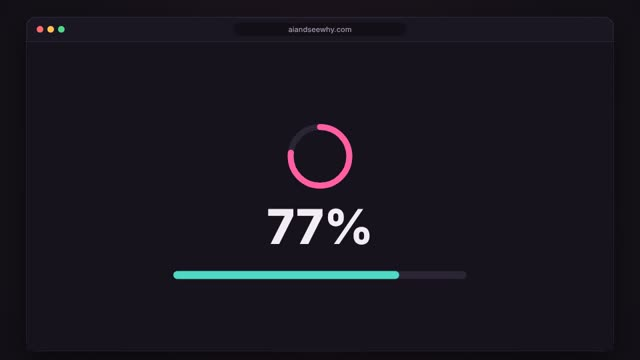
A full screen loading page that counts up to 100 percent, then slides away to reveal the website underneath.
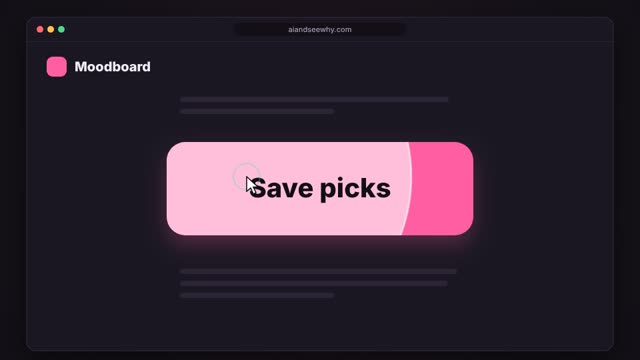
When you click a button, a soft circle spreads out from the exact spot you touched and fades away inside the button.
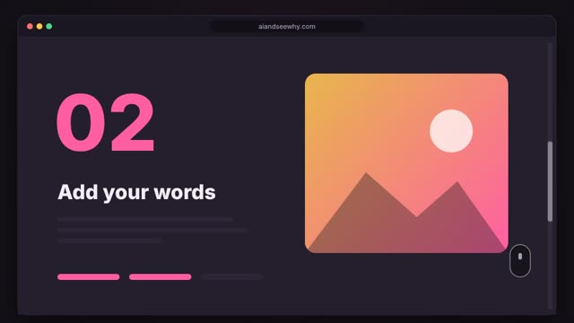
A section freezes in place while you keep scrolling, and its inside changes step by step, like a slideshow you drive with the scroll wheel.
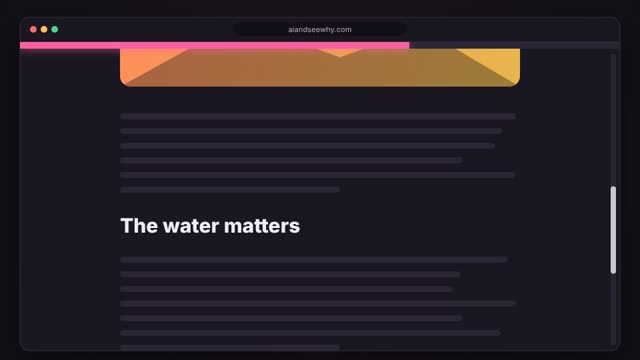
A thin coloured bar across the top of the page grows from empty to full as you read down.
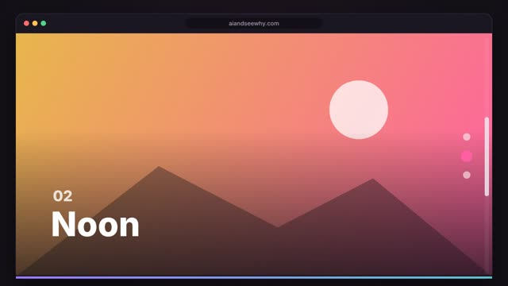
The page is made of full-screen panels, and each scroll glides to the next one and settles exactly on it.
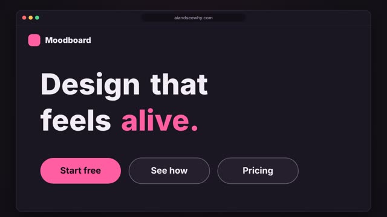
The words of a headline rise into place one after another, followed by the buttons, so the page seems to arrive in a gentle wave.
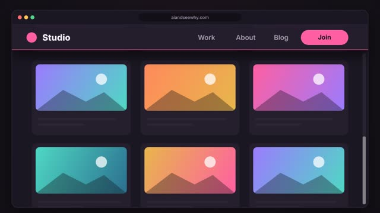
The top bar of a page with the logo and menu stays pinned in place while everything else scrolls underneath.
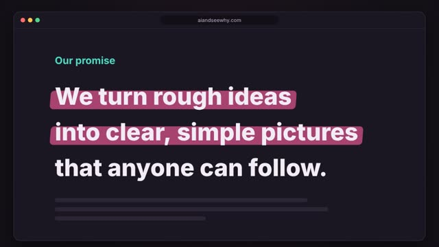
A marker-pen colour sweeps across behind the words of a sentence, one line after another, as if someone is highlighting it while you watch.
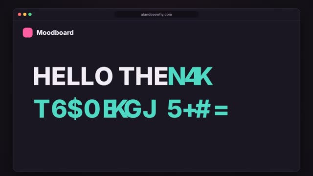
The letters of a headline flicker through random characters, like a code being cracked, before settling into the real words from left to right.